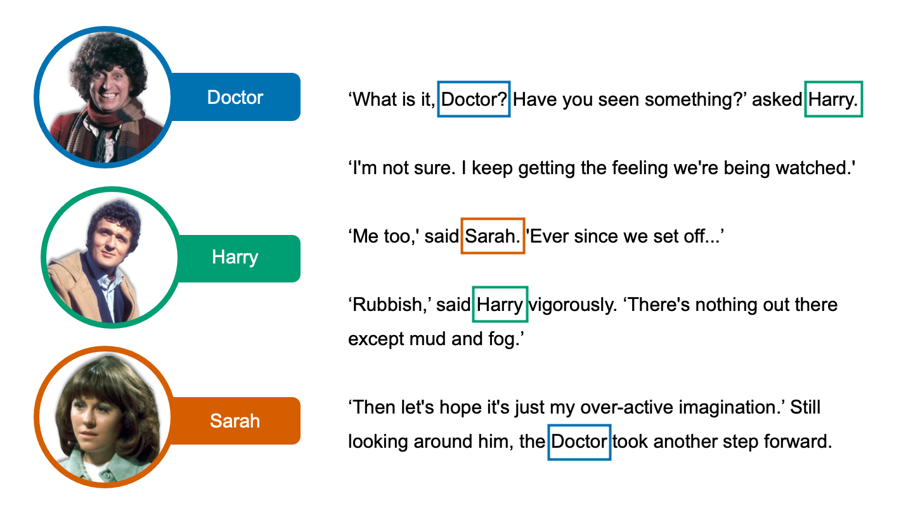

Data Collection
-
Corpus Assembly
I selected 20 novelizations of Doctor Who TV stories and used OCR to convert them from PDFs to text files.
-
Data Extraction
I used natural language processing in Python to extract directed interactions from each novelization.
-
Data Visualization
I generated social network statistics in Gephi and used Gephi and R to visualize these data and raw interactions.
Final Corpus
| Book Title | Year* | Doctor |
|---|---|---|
| Doctor Who and the Android Invasion | 1975 | Fourth |
| Doctor Who and the Androids of Tara | 1978 | Fourth |
| Doctor Who and the Ark in Space | 1975 | Fourth |
| Doctor Who and the Armageddon Factor | 1979 | Fourth |
| Doctor Who and the Brain of Morbius | 1976 | Fourth |
| Doctor Who and the Carnival of Monsters | 1973 | Third |
| Doctor Who and the Cave Monsters | 1970 | Third |
| Doctor Who and the Claws of Axos | 1971 | Third |
| Doctor Who and the Creature from the Pit | 1979 | Fourth |
| Doctor Who and the Curse of Peladon | 1972 | Third |
| Doctor Who and the Dæmons | 1971 | Third |
| Doctor Who Death to the Daleks | 1974 | Third |
| Doctor Who and the Dinosaur Invasion | 1974 | Third |
| Doctor Who and the Genesis of the Daleks | 1975 | Fourth |
| Doctor Who and the Giant Robot | 1975 | Fourth |
| Doctor Who and the Green Death | 1973 | Third |
| Doctor Who and the Hand of Fear | 1976 | Fourth |
| Doctor Who and the Loch Ness Monster | 1975 | Fourth |
| Doctor Who and the Planet of the Spiders | 1974 | Third |
| Doctor Who and the Space War | 1973 | Third |
* These are the years the television stories each novelization is based on were aired. They are logged this way because the novelizations are stand-ins for television data and assumed to be faithful to the television plots.
Data Extraction, Cleaning, & Visualization Methods

Step 1. Create text file, tokenize text file, and extract character names.
I downloaded my Doctor Who corpus from the Internet Archive. Each book was in PDF format, so I used a simple OCR script in Python to convert them to text files. Then, using the spacy and pandas packages in Python, I broke the text down word by word, scraped character names from it, and assembled a CSV file with all of those names. I then manually cleaned this file to remove duplicate names and the occasional object that was tacked onto the end. At right is a representation of name detection in a text file.
Step 2. Extract relationships from text file.
Again using spacy in Python, I compared my character names dataframe to the text and logged interactions as instances in which character names appeared in close proximity to each other. I assembled these interactions into a dataframe using pandas. I modified this script from a script written by Thu Vu to extract interactions from texts in The Witcher series.
Below is a representation of how this Python script iterates through a text file to identify interactions between characters.
In the example above, two bi-directional interactions between the Doctor and Harry are detected and one bi-directional interaction between Harry and Sarah is detected. A total of six interactions would be logged in the interaction dataframe.
Step 3. Clean interaction data.
I wrote several functions in R to help me clean my interaction data. Together, these functions iterate through each unique combination of character names in the raw interactions data, present them to the user, and use user input to determine whether to delete all such combinations or keep them in the cleaned dataframe. Then, all variations of a character's name are matched with their full name in the manually cleaned character name file and changed to their full name. This standardizes the appearance of every character across all stories they appear in, which makes combining interaction dataframes and calculating social network statistics across multiple texts much easier.
Step 4. Calculate social network statistics with Gephi.
I imported my clean name (node) and interaction (edge) dataframes into Gephi. Using Gephi, I calculated social network statistics for each book, customized the appearance of my sociogram (i.e. by changing node size to reflect character degree, changing node color to correspond to character modularity, and repelling points from each other to make all labels visible simultaneously), and exported the sociogram as a JavaScript template. Each of these 20 sociograms are embedded on this site on pages for the Third and Fourth Doctors accessible under the "Visualizations" tab.
I used R to combine all of my interaction (edge) dataframes and repeated my sociogram customization and social network statistics calculations with Gephi as described above. This produced the master sociogram viewable on the "Home" page.
Step 5. Visualize data. I used D3 (JavaScript), Gephi, and R to produce all of my visualizations. Some of the interactive components on this website, like buttons that allow the user to switch between visualizations, are rendered in JavaScript and HTML. This website is a modified template from HTML5UP and is written in CSS, JavaScript, and HTML. The data collection example images above were produced in PowerPoint and feature images from BBC Worldwide, Ltd. All external images on this site are the property of BBC Worldwide, Ltd. and are not my property.